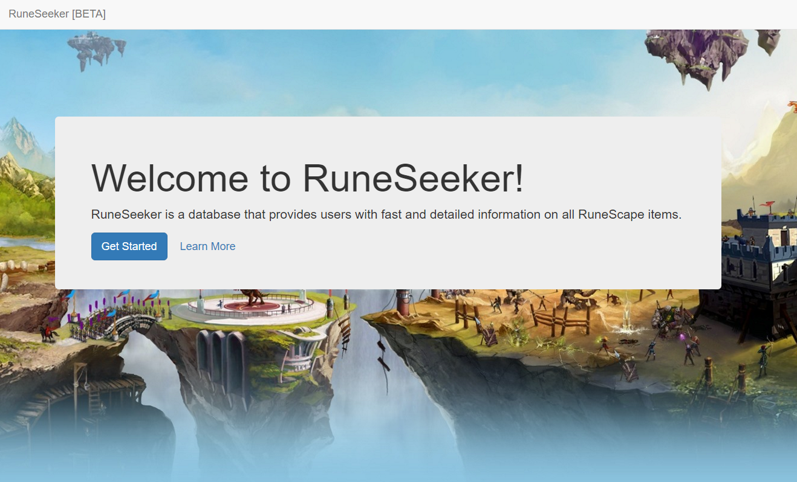
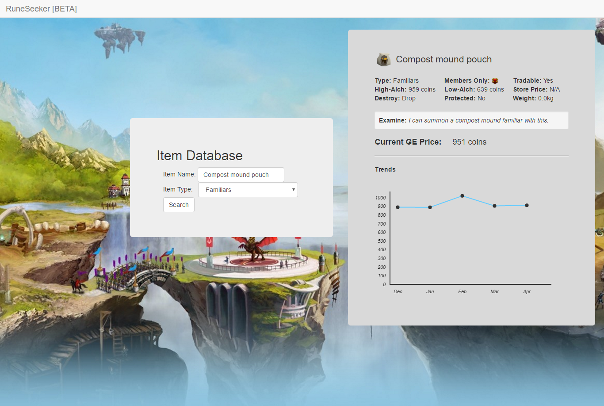

WEB DESIGN

RuneSeeker
RuneSeeker is a JSON parser of RuneScape's GE Item Database that offers users in depth information about items found in RuneScape
Not an official application nor otherwise affiliated with RuneScape or JaGeX.
RuneSeeker is a web-based application that searchs the RuneScape's Grand Exchange database using the Official RuneScape API to retrieve information about each item. It provides the user with a fast and efficient way to access otherwise obscure or uncommon items. By processing the users Query, RuneSeeker makes an API call to RuneScape's Grand Exchange API and recieves back a JSON string with all the relevant information. RuneSeeker parses this information and formats it into a neat information module for the user.
RuneSeeker tracks the properties of each item, what type of item it is (combat, furnishing, food, etc.), whether or not it is an exclusive item (members-only), and the monetary value of the item by different standards. It also provides financially savvy users with a graph to track market trends regarding the item, helping to illustrate patterns in the items monetary fluctuation.
Not an official application nor otherwise affiliated with RuneScape or JaGeX.
RuneSeeker is a web-based application that searchs the RuneScape's Grand Exchange database using the Official RuneScape API to retrieve information about each item. It provides the user with a fast and efficient way to access otherwise obscure or uncommon items. By processing the users Query, RuneSeeker makes an API call to RuneScape's Grand Exchange API and recieves back a JSON string with all the relevant information. RuneSeeker parses this information and formats it into a neat information module for the user.
RuneSeeker tracks the properties of each item, what type of item it is (combat, furnishing, food, etc.), whether or not it is an exclusive item (members-only), and the monetary value of the item by different standards. It also provides financially savvy users with a graph to track market trends regarding the item, helping to illustrate patterns in the items monetary fluctuation.

RuneSeeker Index

Item Categories

Item Details [1]
Item Details [2]